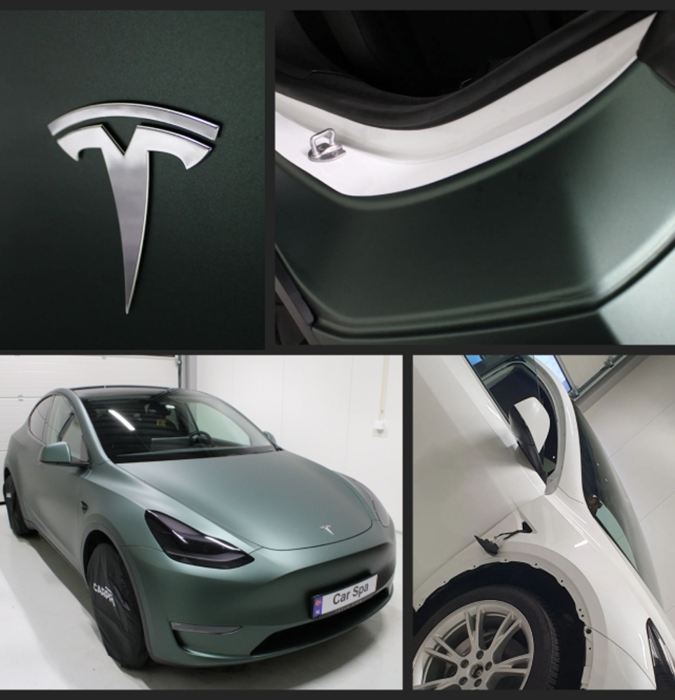
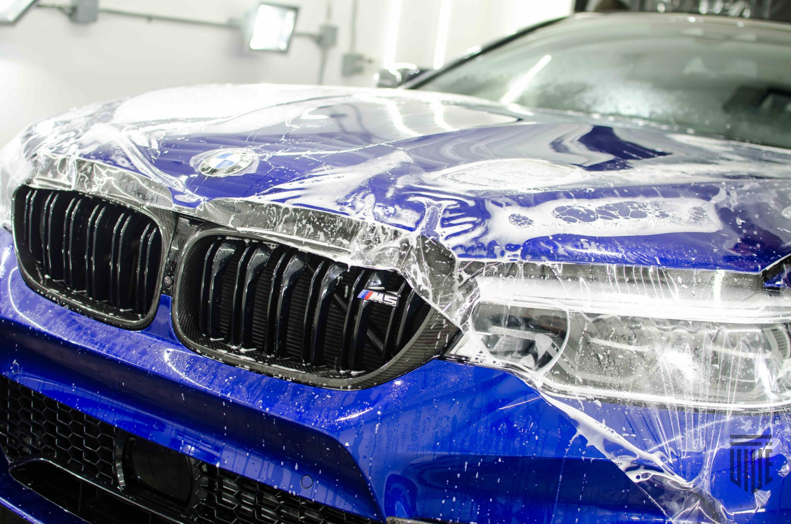
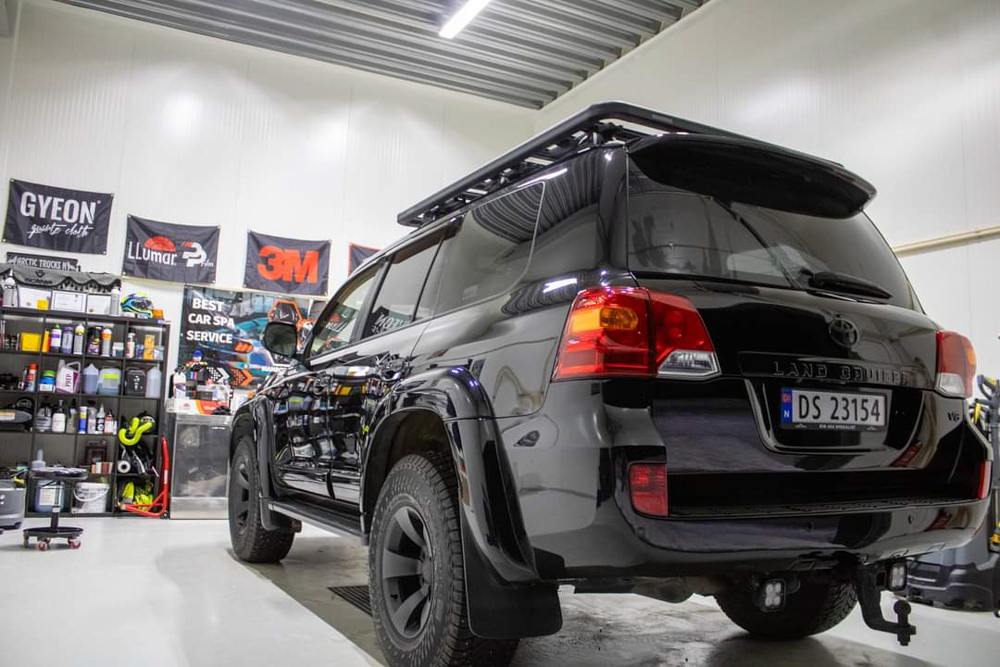
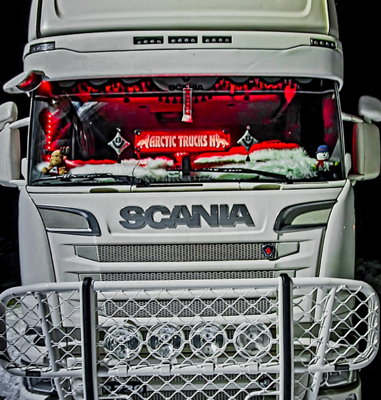
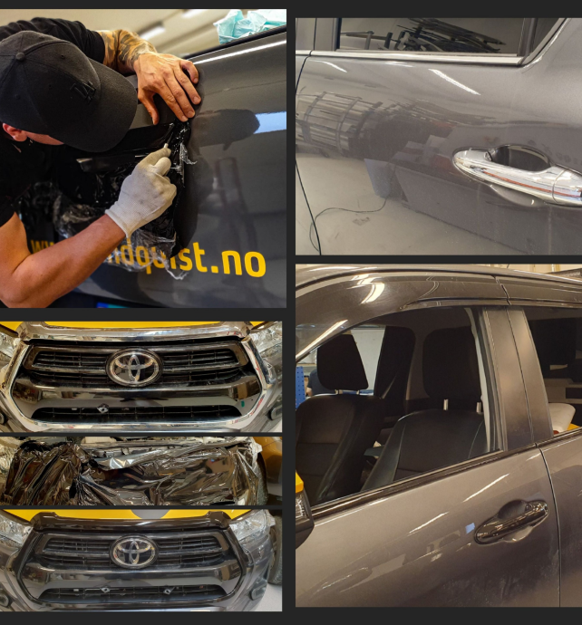

Opplev førsteklasses bilpleie og detaljeringstjenester hos Mamrot CarSpa & Detailing i Minken Næringspark, Ramfjordbotn, Tromsø.
Utforsk markedets beste lakkbeskyttelse med Paint Protection Foil, som leveres med en imponerende 10 års garanti. Vår keramiske forsegling er tilgjengelig for biler, båter, lastebiler og hjullastere. Med ekspertise innen Car Wrapping tilbyr vi profesjonell bilpakking for inspirasjon og styling av ditt kjøretøy. La oss transformere kjøretøyet ditt til et kunstverk gjennom vår lidenskap for bilindustrien. Opplev det ypperste innen bildetaljering i dag!
Om Meg
"De siste årene har jeg vært lidenskapelig opptatt, gjennomført flere kurs og investert mye tid i å tilegne meg kunnskap innen autodetaljering, samt innen bilfoliering og lakkbeskyttelsesfilm. I tillegg til mine sertifikater har jeg hatt gleden av å samarbeide med mange fagfolk. Med min egen visjon ønsker jeg å skape unike design og introdusere dem i min verden av detaljering. Derfor føler jeg meg unik i det jeg driver med.
Visjon er kunsten å se det som er usynlig for andre. Det er av stor betydning for meg å holde meg oppdatert på nye teknikker, og å være informert om de nyeste produktene og utstyret er den beste måten å sikre at jobben blir utført på en håndverksmessig måte av en ekte håndverker."
-Patrik Mamrot
Les merArbeid av høy kvalitet

Premium produkter

Kundetilfredshet
Kundeomtaler

Marthe Johnsen Wilhelmsen

“Kan det han holder på med super service og kjempe bra resultat Anbefales”
Renè Håheim
“Vi har brukt Patrik fast på flere jobber gjennom sommeren!
Polering, plast fornyelser, foliering, ny bil klargjøring og brukt bil fornying!
Strålende resultater og akkurat det vi var på utkikk etter! Vi ønsket å teste hva en
fast
bilpleie fokusert person kunne gjøre på detaljer for å gjøre våre kunder enda mer
fornøyd!
Anbefaler å ta en prat med Patrik om du trenger noe”

Tore Johansen
“Veldig godt fornøyd med resultatet og servicen 🙂👍”

Sunniva Ekmann
“Vil du ha bilen din skinnende ren som når den var ny, så anbefaler jeg virkelig Mamrot ProRens & Detailing 😎 han reddet bilen min fra en heftig sommer som stallbil som var full av støv, høy, jord og flis, men nå ser den god som ny ut. Er meget hyggelig, effektiv og ikke skremmende priser, så blir brukt igjen 😍”

Kai Anders Lunde
“Utrolig dyktig og meget nøye med å få et fantastisk resultat! Jeg er kjempefornøyd med jobben som ble gjort på min bil. God kommunikasjon. Jeg kan anbefale Mamrot ProRens på det varmeste.10/10 👍”

Trond Erik Grådal
“Punktlighet med rett pris og meget flott resultat. Anbefales 👏👏😃👍”
Tjenester
-

Helfoliering
Gi bilen din et unikt preg med vårt toppmoderne folieringsalternativ. Velg blant et bredt spekter av farger og teksturer for å beskytte lakken og gi kjøretøyet ditt et personlig preg.
Helfoliering og Fargeendring: Skap enestående individualitet for din bil med vårt avanserte folieringsalternativ. Utforsk vårt omfattende spekter av farger og teksturer, og gi ikke bare beskyttelse til lakken, men også en unik identitet til ditt kjøretøy. Enten du ønsker en moderne matt finish, en glansfull effekt, eller en kombinasjon av begge deler - satin.
Vi tilbyr skreddersydde løsninger og profesjonell rådgivning for å oppfylle dine estetiske preferanser og beskytte din bil med stil. Med omfattende erfaring og bruk av produkter fra pålitelige produsenter som Avery, PWF, 3M og Oracal, kan du være trygg på kvaliteten. Vår folie gir full beskyttelse av originallakken mot de negative effektene av daglig bruk, som skitt, bilvask og UV-stråling. Med vinyl av topp kvalitet og en tykkelse mellom 70-100 mikron, tilbyr vi også 5 års monteringsgaranti.
Les mer -

PPF - Lakkbeskyttelse
Bevar skjønnheten til din bil med vår nyskapende lakkbeskyttelse. Vi benytter moderne teknologi for å påføre en usynlig, beskyttende hinne som effektivt skjermer mot steinsprut, insekter og skadelige UV-stråler.
Paint Protection Film (PPF) er et polyuretanmateriale som utgjør den mest holdbare typen lakkbeskyttelse tilgjengelig på markedet. Denne løsningen er preget av ekstrem lang holdbarhet, med en varighet på opptil 10 år (med 5 års monteringsgaranti). Å beskytte en bil med PPF er spesielt dedikert til de som har investert mye i nye biler og ønsker å beskytte kjøretøyet mot betydelig verditap.
Vi tilbyr den nyeste serien fra anerkjente merker som 3M og STEK, som har selvregenererende egenskaper, er antigule, og har en tykkelse på 200 mikron (sammenlignet med de originale lakklagene som vanligvis har mellom 70-100 mikron). PPF-folie gir fullstendig beskyttelse mot steinsprutskader og riper med sin "self-healing" teknologi, og kan påføres på en rekke overflater, inkludert biler, båter, lastebiler, bilinteriør og mer. De mest populære og anerkjente PPF-pakkene inkluderer:
- Mest Utsatte Steder
- Full Front
- Helfoliering Gjennomsiktig (gloss)
- Fargeendring Matte (fra gloss til matte)
- Individuelle oppgaver, inkludert Carbon PPF, Farge PPF og Høyglans Black PPF, som er ideell for den nåværende tofargede malingstrenden.
Les mer -

Keramisk Lakkforsegling
Beskytt investeringen din med vår avanserte keramiske lakkforsegling. Denne langvarige løsningen gir en usynlig barriere mot skitt, forurensninger og UV-stråler, og gir kjøretøyet ditt en strålende glans.
Takket være våre fremragende markedsprodukter, som kontinuerlig oppdateres og er anerkjent over hele verden for sine slitesterke egenskaper, samt vår bestselgende produktserie med en varighet på 36 måneder/40 000 km, kan vi uten tvil stå for kvaliteten av våre tjenester.
Det keramiske belegget bidrar til å beskytte lakken på flere måter. For det første har det hydrofobe egenskaper som gjør at vannet ikke legger seg på karosseriet, men heller renner av. Denne funksjonen gjør det også vanskeligere for forurensninger å feste seg til overflaten. Belegget fremhever også dybden i malingen, noe som gir bilen et strålende og glassaktig utseende. Videre gjør det keramiske belegget lakken mer motstandsdyktig mot UV-stråling, noe som forhindrer falming over tid.
Kvaliteten på det keramiske belegget og utførelsen spiller en avgjørende rolle for resultatet. Våre produkter er internasjonalt anerkjente for sin glans og hydrofobe egenskaper, og vårt keramiske belegg er klassifisert med en 9H-hardhet. Dette belegget påføres av erfarne og sertifiserte fagfolk, og den beste effekten oppnås gjennom riktig forberedelse av billakken og flere steg med polering og lakkorrigering.
Les mer -

Lakk Korrigering
Gjenoppliv glansen til din kjøretøyets overflate med vår profesjonelle poleringstjeneste. Fjern riper, oksidasjon og ujevnheter, og oppnå en speilblank finish som får bilen din til å skinne som ny.
Lakkorrigering er en prosess som målrettet fjerner virvler, riper og andre feil fra bilens lakk. Målet med denne behandlingen er å eliminere ufullkommenheter og gjenopprette lakken til sin opprinnelige tilstand. Hos oss, samt hos andre profesjonelle spesialister, tilbys tre typer lakkorreksjon: One-Step, 2-steg og 3-Steg. Den siste, kjent som full lakkorrigering, benyttes på de mest krevende overflatene. Den tillater oss å fjerne opptil ca. 90% av riper, og etter behandlingen fremstår bilen som svært presentabel under alle lysforhold og værforhold.
Valget av riktig metode bør overlates til spesialistene som behandler kjøretøyet. Vi tar profesjonelt hensyn til hver eneste bil og gjennomfører en grundig sjekk av tilstanden og tykkelsen på lakken før vi starter poleringen.
Etter en slik behandling, som sikter mot å oppnå maksimalt og best mulig resultat samtidig som bilen beskyttes på lang sikt, vil vi gjerne anbefale å vurdere vår lakkbeskyttelsestjeneste for ytterligere trygghet og vedlikehold.
Les mer -

Lastebil Behandling
Forsterk lastebilens lakk med vår avanserte keramiske lakkforsegling. Motstå skitt, veisalt og værpåvirkning mens du opprettholder en strålende og reflekterende overflate.
Forsterk lastebilens lakk med vår avanserte keramiske lakkforsegling. Motstå skitt, veisalt, skadelige UV-stråler og værpåvirkning samtidig som du opprettholder en strålende og reflekterende overflate. Keramisk belegg har ikke bare beskyttende egenskaper, men reduserer også vedheft av snø, is og vann til karosseriet på grunn av deres hydrofobe egenskaper. Korrosjon, hovedårsaken til forekomst og spredning av rust, er skader og oksidasjon. Det keramiske belegget minimerer risikoen for begge deler. Vi anbefaler at kunden kommer tilbake for en kort kontroll eller eventuelt en spa-vask time etter et år eller når vinterperioden er over.
Som en erfaren lastebilsjåfør med lidenskap kan jeg forvandle lastebilen din til en perfekt stand. I tillegg tilbyr vi også unike grafiske oppgaver, tuning av striper og logoer, og muligheten til å skape ditt drømmedesign gjennom helfoliering, bilinnpakning eller fargeendring. Vi anbefaler også å gi full beskyttelse til lastebilen din ved å velge PPF-pakken - enten for de mest utsatte områdene eller for hele fronten.
Les mer -

Chrome Delete
Oppgrader kjøretøyets utseende med vår spesialiserte Chrome Delete-tjeneste. Ved å eliminere det blanke kromet gir vi bilen din et moderne og eksklusivt preg. Velg blant et utvalg av matte eller blanke finisher for å matche din personlige stil.
Gi kjøretøyet ditt et oppgradert utseende med vår spesialiserte Chrome Delete-tjeneste. Kromdetaljer er svært utsatt for riper og falming over tid. Hvis du ønsker å prøve noe nytt ved å fjerne kromet fra kjøretøyet ditt, tilbyr vi flere løsninger med markedets beste kvalitetsfolie.
Ved å fjerne det blanke kromet gir vi bilen din et moderne og eksklusivt preg. Velg blant et utvalg av Gloss, Satin eller Matte fra 3M 2080-serien for å matche din personlige stil.
Varighet: Folien har en produsentgaranti på 8 år, men i virkeligheten vil UV-eksponering sannsynligvis føre til noe nedbrytning rundt 4-5 år. Vi gir en 2 års garanti, da vi ikke kan nøyaktig forutsi hvor godt den er vedlikeholdt av kunden.
Les mer